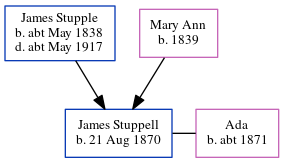

Susannah Spratt (née Thunder) 1851 - 1932
[ Home ] | [ Calendar ] | [ Surnames Index ] | [ Errors ] | [ Family History ]Susannah Thunder, the wife of Charles Spratt (the great-great-uncle of Nigel Horne), was born in Beltinge, Kent, England in 18511,2,3 and married Charles (a smack owner and fish salesman with whom she had 3 children: Sidney Charles James, Edwin Percy and Herbert Jesse) at St Martin, Herne, Kent, England on 3 Jul 18805.
During her life, she was living at her birthplace on 7 Apr 18611; and at 44 Addington Street, Ramsgate, Kent on 31 Mar 19016 and on 2 Apr 19112.
She died on 3 Jan 1932 in Blean, Kent, England4.
Children
- Sidney Charles James was born c. Aug 1882
- Edwin Percy was born c. May 1891
- Herbert Jesse was born on 16 Aug 1894
Citations
- 1861 England, Wales & Scotland Census - Findmypast (was age 10 and the daughter of the head of the household)
- 1911 Census for England & Wales - Findmypast (was age 60 and the wife of the head of the household)
- England Marriages 1538-1973 - Findmypast
- England & Wales deaths 1837-2007 - Findmypast
- Kent, Canterbury Archdeaconry marriages 1538-1928 - Findmypast
- 1901 England, Wales & Scotland Census - Findmypast (was age 50 and the wife of the head of the household)
Media
1911 Census for England & Wales - GBC/1911/RG14/04516/0043/2
England & Wales deaths 1837-2007 - BMD/D/1932/1/AZ/001074/016
1861 England, Wales & Scotland Census - GBC/1861/0003455377
Family Tree
Map
Generated by ged2site. Last updated on Jul 3, 2024
Known Issues
No records of living with anyone